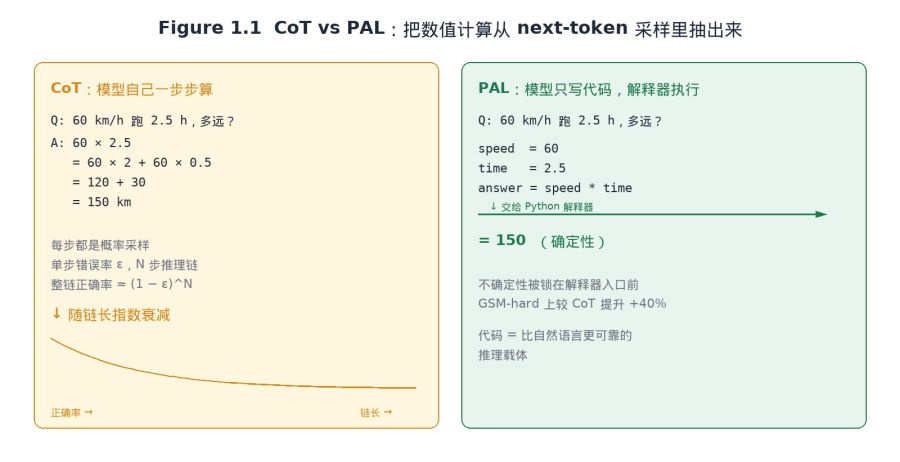
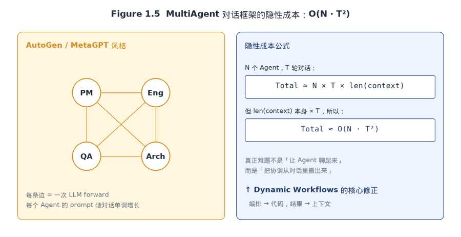

5 月 28 日，Anthropic 在发布 Claude Opus 4.8 的同时，向所有付费 Claude Code 用户开放了一项研究预览特性，叫 Dynamic Workflows。表面上，它是 Claude Code MultiAgent 体系里的又一个新功能。但如果把过去四年的技术演进串起来看，会发现这只是把同一条路又往前推了一步：从最早把 Reasoning 代码化（CoT → PAL/PoT），到后来把 Action Space 代码化（CodeAct），再到去年把 Tool Call 代码化（Code Execution with MCP），这一次轮到 Orchestration 也被代码化，由 Claude 现场写出脚本、运行时独立执行。
本文按技术演进脉络、产品演进、技术架构、代码实践、案例分析、商业格局、风险边界与未来展望八条线展开。
一、技术演进脉络：四年里，「代码」如何一步步成为 AI 系统的中枢
Dynamic Workflows 不是凭空出现的。它的几乎每一条核心设计，都能在过去四年的论文、开源项目、工业实践里找到清晰的前身。
1.1 第一阶段（2022）：CoT、PoT 与 PAL，把推理交给代码
2022 年 大模型伊始，code 就已经进入 LLM 推理路径。Wei 等人提出的 Chain-of-Thought（CoT）证明了「让模型一步步写出思考过程」可以显著提升数学和符号推理的准确率，但 CoT 仍把推理和计算都压在自然语言里，一旦多步算术介入，错误会被层层放大。
两篇几乎同期的论文给出了同一个直觉：把推理这件事拆开。PAL（Program-aided Language Models，Gao 等，arXiv 2211.10435，ICML 2023）让模型把自然语言问题翻译成可运行的 Python 程序，再把求解步骤外包给 Python 解释器；模型只负责「写出怎么算」，不负责「算对」。Chen 等的 Program of Thoughts（PoT，arXiv 2211.12588）走的是同一条路：把逻辑推理和数值计算解耦，用代码承担计算，把孤立步骤的累积误差砍掉。两者在 GSM、GSM-hard、FinQA 等数学/金融基准上对 CoT 实现了 8%–40% 不等的提升。

Figure 1.1 CoT 把推理压在自然语言里，PAL 把数值计算外包给 Python 解释器。
放回大模型的底层工作机制看，CoT 与 PAL 的差距是有公式的。每生成一个 token 都是一次概率采样，单步错误率记为 ε，那么一条 N 步推理链整链正确的概率约为 (1−ε)^N，随长度指数衰减。CoT 鼓励模型把链拉得越长越好，等于把这条指数衰减曲线打满；PAL 与 PoT 反其道而行，把数值计算从 next-token 采样里抽出来交给确定性解释器执行，相当于把不确定性锁在了 Python 的入口前。这就是它们能在 GSM-hard、FinQA 这类基准上比 CoT 高出 8%–40% 绝对值的原因，不是模型变聪明了，而是不确定性没了。
CoT 在很多场景里其实是一种「让模型显得在思考」的表演，它的真正价值更接近「给模型多一点 token 算预算」，而不是「更可靠的推理路径」。PAL 那一年才是这条故事线的真正主干，只是它当时没有「思考中」那么吸睛、给不了用户明显的正反馈。
1.2 第二阶段（2022–2023）：Code as Policies 与 ReAct，把行动也代码化
2022 年 9 月 Google 机器人团队 Liang 等的 Code as Policies（arXiv 2209.07753）则让代码成了「行动」的载体：自然语言指令被翻译成调用感知 API 与控制 API 的策略代码，机器人据此完成抓取、导航、绘图等任务。论文里那种「让 LLM 重新组合 API 写新策略」的写法，几乎可以一字不改地映射到今天 Claude Code 工作流里「让 Claude 现场写脚本调度 subagent」的形态。
与此同时，Yao 等的 ReAct（2022）确立了「Reason + Act」交错执行的写法：每一步先写出推理，再发出行动。这是 LangChain、AutoGPT、BabyAGI 等早期 Agent 框架的共同基座。但 ReAct 把规划交给「自然语言推理」，长任务里推理链膨胀得快、纠错链路也长，这一短板催生了下一阶段的反思式机制。

Figure 1.2 ReAct 把每一步抛回 LLM，Code as Policies 一次 forward 写完整段策略。
用 Transformer 的复杂度公式去看，会发现 ReAct 的代价比直觉更大。
self-attention 的成本是 O(n²)；ReAct 每轮上下文长度 n 都因为前几轮的 Thought / Action / Observation 单调增长，总 FLOPs 大致是 O(T · n²)。Code as Policies 把整段控制流压进一次 forward，n 保持基本恒定，整体降到 O(n²)。Dynamic Workflows 把这条思路又往前推了一档：脚本本身就是 control flow 容器，连 forward 都省掉了，每一段 if/else、for、try/except 都从「模型说一次」退化成「runtime 执行一次」。
ReAct 是 AutoGPT 时代的拐杖，到了现在早就该被扔掉。把每一步「下一步做什么」反复抛回 LLM 决策，是在用 Transformer 装 RNN，既浪费它最擅长的一次性结构化输出能力，又把全部不确定性都堆进 prompt 里，LLM 只会越来越漂移。
1.3 第三阶段（2023）：Reflexion、Self-Refine 与 Voyager，加入反思与代码化的「技能库」
Shinn 等的 Reflexion 和 Madaan 等的 Self-Refine（2023）把「反思」写进了 Agent 循环：让模型对上一次的失败做出文字化批评，再据此改写下一次尝试。这条思路是 Dynamic Workflows「对抗式验证」的原型，只不过这一次反思层被升级成独立的 Agent ，而不是同一个模型对自己说话。
更具结构意义的是 NVIDIA 与 Caltech 等的 Voyager（arXiv 2305.16291）。它在 Minecraft 里跑出了第一个「终身学习」的具身 Agent ，由自动课程、JavaScript 技能库、迭代式提示三大组件构成；尤其是「把每个成功任务的代码沉淀进可向量检索的技能库」这一设计，几乎就是今天 Claude Code「把动态工作流脚本保存为 / 命令」的范本。

Figure 1.3 Voyager 把每段成功代码沉淀进可向量检索的技能库，新任务先 top-k 召回再 compose。
Voyager 的工程含金量在于它同时调用了大模型最被低估的两个能力。一个是 in-context learning：top-k 相似技能直接当 examples 注入 prompt，模型不用任何微调就能学到新写法；另一个是 program composition：把已有 function 当 building block 写出更高层 function。
不再把 LLM 当 Reasoner 用，而当 Code Composer 用，它的潜力就完全不一样。
这就引出一个被业界长期低估的判断：Voyager 是 2023 年 Agent 方向最被错估的论文之一。大量讨论被「LLM 玩 Minecraft」这种表面叙事盖住了，但它真正的贡献是给整个 Agent 领域指明了一个事实，Agent 的价值不在于单次能跑多远，而在于跑过一次的东西能不能复用。
1.4 第四阶段（2024）：CodeAct 把「动作空间」彻底统一为可执行代码
2024 年 ICML 论文 CodeAct（Wang 等，arXiv 2402.01030）把上述线索做了一次理论上的归纳：传统 LLM Agent 用 JSON 或自然语言定义动作，本质上是「受限的动作空间」；如果把所有动作都收敛为可执行 Python 代码，让 Agent 在每一轮内自由组合 if/else、循环、库调用、错误处理，模型就能在 17 个 LLM 与 API-Bank 等基准上比传统方案高出 20% 的成功率。可执行代码不仅是某些动作，而是动作空间本身。
一旦动作空间被统一成代码， MultiAgent 协作、长链路推理、动态分支等本属于工程编程的能力就可以原样借给 Agent 。就几乎等价于 Dynamic Workflows 的本质。

Figure 1.4 JSON Tool Call 把动作约束在单次调用，CodeAct 把动作空间扩展成 Python AST。
JSON Tool Call 把动作空间约束成「单次调用 + 单次返回」，所有 if/else、for/while、try/except 都要被「逆向」拆回 LLM 的下一轮 forward 重新决策；CodeAct 让动作空间等于 Python AST，一次 forward 就能输出完整 control flow。
OpenAI 在 2023 年定义 Function Calling 的时候，本来应该走 CodeAct 路线。但毕竟是 REST 时代，最好的选择只能是强制 JSON，被迫（动作空间狭窄）的范式上整整两年。OpenAI 当时已经在 ChatGPT 里跑 Code Interpreter 沙盒了，技术上完全做得到。是产品定位决定了取舍：OpenAI 把 Function Calling 当 API 经济的延伸。其实这件事和 通用 workflow 产品很难存活下来也比相似，都是遇到了表达力瓶颈。
1.5 第五阶段（2023–2024）：AutoGen、MetaGPT、ChatDev 与 MultiAgent 协作的工程实践
如果说 CodeAct 解决的是「一个 Agent 能多强」，AutoGen（微软，开源）、MetaGPT 和 ChatDev 探索的是「多个 Agent 如何协作」。AutoGen 用「可定制的对话 Agent + 多轮谈判」的方式做事件驱动的协作；MetaGPT 把「PM-架构师-工程师-QA」的 SOP 嵌入框架，做出意见鲜明的流水线；ChatDev 让 Agent 扮演软件公司的角色矩阵，相互配合。

Figure 1.5 MultiAgent 对话框架的隐性成本，从拓扑直接推到 O(N · T²)。
MultiAgent 框架有一个藏在拓扑里的成本公式：N 个 Agent，T 轮对话，总 token 大致是 N × T × len(context)；但 len(context) 本身又随 T 单调增长，所以整体来到了 O(N · T²) 级。这条曲线一旦 T 走到上百就完全压不住，MetaGPT 在 SOP 强约束下还能跑稳，AutoGen 这种开放对话一旦放开就经常掉到「Agent 们互相绕圈」的失败模式里。
从这条曲线可以得出一个对 2024 年很多 MultiAgent 框架不太友好的判断：它们集体在解决一个伪问题。这些框架以为 MultiAgent 系统的难点是「让 Agent 们聊得起来」，其实真正的难点是相反的，「不要让它们聊」，把协调从对话里搬出来，放进代码。
1.6 第六阶段（2025）：Code Execution with MCP 与 Skills，Anthropic 自己的两次准备
2025 年的两次发布是 Dynamic Workflows 的最近一段路。
10 月，Anthropic 在 Claude Code 与 API 中引入 Agent Skills，以文件夹形态打包的「指令 + 脚本 + 资源」由 SKILL.md 元描述驱动模型动态加载。Skills 把「Voyager 的技能库」从研究原型搬进了产品，使得「专家知识可被打包、可被检索、可被组合」。
Figure 1.6 传统 MCP 把工具一次性塞进 prompt，Code Execution 让模型按需 read 文件树。
11 月，Anthropic 工程团队发布 Code Execution with MCP。它直指 MCP 在规模化场景下的两弊端：上千个工具定义提前进上下文，中间结果反复经过模型。给出的解法是把 MCP 工具改造为基于文件系统的代码 API，让 Agent 写代码而不是直接调工具。
同期推进的 Subagents 与 2026 年 2 月研究预览的 Agent Teams，前者负责单一委派工人，后者承担 MultiAgent 协作。
两者都被纳入了今天的 Claude Code 五层架构，即 MCP、Skills、Agent、Subagents、Agent Teams。Dynamic Workflows 是这一层架构之上、专门处理「编排」这件事的第六层。
1.7 从大模型工作机制看 Dynamic Workflows 为什么是对的
把上面六个阶段叠在一起会得到一个很反直觉的结论：大模型这两年在产品形态上的所有重要突破，本质上都不是「模型能力升级」，而是「token IO 架构的设计游戏」。CoT/PAL 在玩「不确定性放在哪里」；ReAct/CodeAct 在玩「一次 forward 写多少」；Voyager/Skills 在玩「跑过一次的东西如何复用」；Code Execution with MCP 在玩「上下文按需加载」。
Figure 1.7 Dynamic Workflows 的运行时拓扑：编排离开上下文窗口，只把最终答案回传 LLM。
未来 12 个月，主流 AI 编程工具会被迫向「工作流即代码」收敛，区别只在于谁的运行时更稳、谁的工具白名单更全、谁的对抗式验证更可信。把 LLM 当成 Reasoner 这条路在 2023 年是主流，到 2026 年应该被认为是落户。
二、Dynamic Workflow 特性总览
2.1 一段会自我编排的 JavaScript
每当任务被认定为「值得开工作流」，Claude 会现场生成一段 JavaScript 编排代码。脚本内部决定要派发哪些子 Agent 、按何种顺序、走怎样的分支与循环。运行时在独立沙盒中执行该脚本，最多协调 1,000 个子 Agent 、最高并行 16 个；脚本本体没有文件系统与 shell 权限，只有被它派发的子 Agent 可以读写文件、运行命令、调用 MCP 工具。
2.2 内置工作流：/deep-research
研究预览阶段内置的 /deep-research。它对一个研究问题从多个独立角度并行搜索，对抓取到的来源相互交叉验证，对每条声明做内部投票，最终输出一份带引用、且自动过滤未通过交叉检验声明的报告。
2.3 从「Claude 是编排者」到「代码是编排者」
传统 Claude Code 会话里，模型就是编排者：每一轮决定下一步派谁去做、把上一步的结果消化、再据此规划。这种模式直观，但有两个先天问题，每一个中间结果都会回流到上下文窗口，长任务必然把窗口塞满；编排逻辑无法保存、无法复跑，每次都是「即兴演奏」。
Dynamic Workflows 把规划逻辑挪到代码里。Claude 现场写出的 JavaScript 脚本掌管循环、分支和中间变量，运行时执行脚本，Claude 的上下文只剩下「最终答案」。这一改动有三个直接收益：
•中间状态不再消耗对话上下文，长任务可以跑数小时甚至数天；
•脚本可以被审阅、保存、复用，同一套审计流程可以在每个分支上重复跑；
•对抗式验证从「Claude 自己提醒自己注意」升级为「另一组子 Agent 专门尝试反驳第一组的结论」。
理论根源正是前文 CodeAct 的论断：把动作空间统一成可执行代码，就把编程语言里成熟的控制流、状态管理、错误处理一次性借给了 Agent ；同时也把「中间结果是否回到模型上下文」这件事变成了显式的选择。
2.4 三个执行单元的关系：Subagents、Skills、Workflows
Claude Code 现有三个互不替代、但可组合的执行单元。理解它们的区别，是用对这套体系的前提。
| 维度 | Subagents（子 Agent ） | Skills（技能） | Workflows（工作流） |
|---|---|---|---|
| 本质 | Claude 现场派生的工作进程 | Claude 跟随的一份说明书 | 运行时执行的一段脚本 |
| 谁决定下一步 | Claude，按轮决策 | Claude，按提示词决策 | 脚本 |
| 中间结果存在哪 | Claude 上下文窗口 | Claude 上下文窗口 | 脚本变量 |
| 可复用的是 | 工作进程的定义 | 说明书本身 | 整套编排 |
| 规模 | 每轮少量委派 | 与子 Agent 类似 | 每次几十到上千个 Agent |
| 中断恢复 | 重启当前轮 | 重启当前轮 | 同会话内可断点续跑 |
三者最大的区别在于「谁拿着计划」。Subagents 和 Skills 把计划交给 Claude 的当下推理；Workflows 把计划落成代码，由运行时执行。Workflows 内部仍然可以再派发 Subagents、再调用 Skills，它们是组合关系而非互斥关系，同时也对应 Anthropic 已有的「五层架构」（MCP → Skills → Agent → Subagents → Agent Teams）之上的第六层「Orchestration」。
2.5 对抗式验证：把「证伪」写进流水线
一次工作流的执行通常分阶段：Claude 先根据提示词制定计划，把工作切成子任务并行派发；接着另一组「评审」 Agent 被独立启动，专门尝试反驳第一组的结论；如果两组结果不收敛，工作流会继续迭代，直到答案稳定下来才进入下一阶段。
这一设计的原型是 Reflexion 与 Self-Refine，但 Workflows 把「同一个模型自我批评」升级为「独立的另一组 Agent 来反驳」，借此避开了「自我评估者总倾向于证实自己」的失败模式。在没有 Human 参与的长任务中，风险通常来自「模型说服了自己」，独立上下文的反驳策略会缓解该情况。
三、上手代码：从一个 prompt 到一份审计报告
3.1 启动方式
除运行 /deep-research 这类内置命令之外，常规启动一个动态工作流有三条路径：
# 方式一：在 prompt 中显式写出 workflow，单次触发 |
如果某次跑出的工作流符合预期，在 /workflows 视图里选中该运行并按 s 即可将其脚本保存为一条 / 命令。两条保存路径分别覆盖团队与个人：
# 项目级，随仓库共享给团队 |
3.2 一段可读的脚本结构（示意）
尽管 Anthropic 没有公开稳定的工作流脚本 API，但官方文档示意了脚本骨架，通常包括分阶段的 fan-out、对每阶段结果的对抗式评审、以及收敛检测。
// 伪代码：审计 src/routes/ 下的认证缺陷 |
3.3 把 Code Execution with MCP 的思路用到自己的工具上
如果你的团队还没准备好直接拥抱 Dynamic Workflows，但希望减轻 Claude Code 的 token 焦虑，可以借鉴 Code Execution with MCP 的做法：把内部 API 暴露成文件树形式的 TS/JS 模块，让 Claude 按需读取。下面是 Anthropic 给出的最小示例：
// ./servers/google-drive/getDocument.ts |
Anthropic 官方实验显示，这种重构能把同一个跨工具流的 token 消耗从约 15 万降到 2 千。
笔者团队的 Mana 产品从一开始也是相同的设计。
四、案例：用 11 天把 Bun 从 Zig 移到 Rust
最具说服力的案例来自 Bun 的作者 Jarred Sumner。Anthropic 在 Dynamic Workflows 发布博客里专门为这个项目留了一节：他用 Dynamic Workflows 把 Bun 从 Zig 移植到 Rust，从首次提交到合并耗时 11 天，产出约 75 万行 Rust 代码，这项工作如果按人月估算，应该是年度级的工程。
根据 Anthropic 的官方披露，整次移植由四段串联的 Dynamic Workflow 接力完成：
•第一段 workflow：为 Zig 代码里的每一个 struct 字段映射出正确的 Rust lifetime；
•第二段 workflow：为每个 .zig 文件并行生成行为等价的 .rs 文件，数百个 Agent 并行工作，每个文件配两名独立评审 Agent；
•第三段 workflow：进入 fix loop，反复驱动 build 与 test suite，直到两者都跑通；
•第四段 workflow：在主干合并后于夜间运行，针对不必要的 data copy 逐项开 PR，等待人工复核。
如果一段工作流真能在 11 天里完成 75 万行的语言迁移，那么以下三件事几乎可以确定：
•「拆任务」会变成比「写代码」更被高估的能力，把工作准确切片、设计验证手段，将成为高级工程师的核心技能；
•代码审查会被部分外包给「对抗 Agent 」，人类会聚焦在更高阶的判断上，例如架构取舍、业务一致性；
•企业内部会出现一种新的可沉淀资产，叫「工作流脚本库」，围绕审计、迁移、合规检查的工作流脚本会和代码本身一样被纳入版本控制。
从这个角度看，Dynamic Workflows 不只是 Claude Code 的一次升级，更像是 Anthropic 对「AI 工程师的工作」的产品级回答。
五、结语：程序化编排是这代 Coding Agent 的隐藏战场
回看 2022 到 2026 年的技术线索，会发现一个清晰的方向：先是把推理放到代码里（PAL/PoT），再把行动放到代码里（Code as Policies、CodeAct），再把反思放到代码里（Reflexion、Self-Refine），再把 MultiAgent 协作放进工程框架里（AutoGen、MetaGPT、ChatDev），再把工具调用放到代码里（Code Execution with MCP），最后这次的 Dynamic Workflows，把编排本身也放到了代码里。
如果要做一个不算激进的预测：12 个月之内，主流的 AI 编程工具都会走到「工作流即代码」这一步，区别只在于谁的运行时更稳、谁的工具白名单更全、谁的对抗式验证更可信。
本文同步自微信公众号，点击查看原文